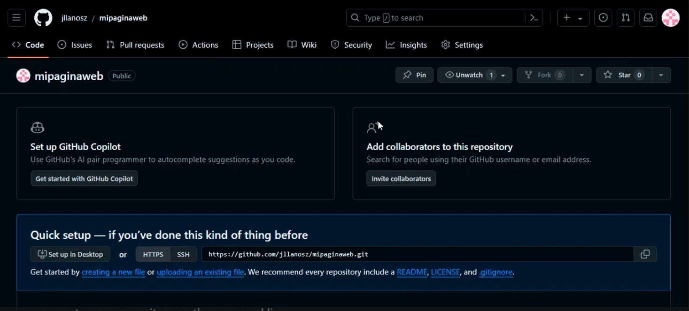

Sesión 6:
En la última clase vimos una introducción a CSS para poder estructurarlo de la En la clase actual profundizamos más sobre cómo personalizar nuestra página en html, cómo personalizar los botonos de linK, nos explicarón más sobre cómo elegir elementos de prioridad en nuestra bitácora, ya que se tiene que adaptar a nuestras necesidades de diseño y organización.
Sesión 7:
El profesor explicó como elimninar y subir a un repositorio las actualizaciones de nuestra bitácora a la nube a través del portafolio virtual GitHub, y enlazar la cuenta con Netlify para poder crear el link web y lograr compartilo con otras personas. Se creó y vinculó con nuestra cuenta de Google.
